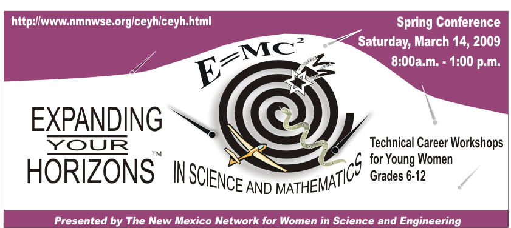

 11/09:
11/09:
CEYH 2010 will be held on Saturday, April 3, 2010 at Central New Mexico Community College (CNM), with opening activites held in Smith Brasher Hall (SB on campus map) on the CNM main campus (area map showing main campus location).
Further details will be posted as available, or contact the CEYH planning committee at CENTRAL_EYH-L@list.unm.edu.
Here is your chance to meet with female professionals from the community who have found satisfying careers in law, mathematics, engineering, computing, medicine, and other non-traditional technical careers. Each student (6 through 12 grade females) attends three workshops, led by a woman professional who shares an aspect of her technical field. Workshops typically have 10 to 15 students; which facilitate interaction between the presenter and students. Presenters also share personal experiences and other influences that have impacted their decisions as they have developed their careers.
View photos of previous conferences: 2005 2006
2006 2007
2007 2008
2008
"I am so glad to find links to this great program after so many years.
I give a lot of credit to this program for my success in the engineering field.
I went through this program of course at UNM while in 7th grade at
"My daughters go every year and come back so jazzed up!" - Joe
Home-Information-Career Exploration Workshops-Registration form-Directions-Adult Program-Credits
This page last modified on